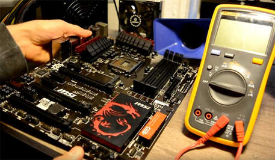

Căn cứ vào các lỗi đã xác định và phương án giải quyết của chỉ huy, tiến hành khắc phục lỗi theo dự kiến đã xác định. Với sự cố phần cứng thực hiện khắc phục sửa chữa hoặc thay thế linh kiện, với sự cố phần mềm thực hiện cài đặt lại phần mềm hoặc diệt virus. Trường hợp máy tính bị lỗi cả phần cứng và phần mềm (Hỏng ổ cứng,...) cần thực hiện quy trình khắc phục phần cứng xong rồi tiến hành quy trình khắc phục phần mềm.
